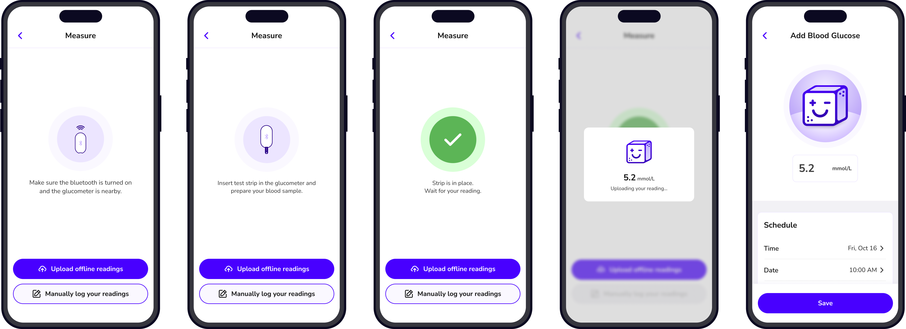

Overview
The started when
Problem
A lot of patients who are diagnosed with Type 2 diabetes and Prediabetes struggle to manage their blood sugar levels due to a lack of personalized insights, motivation, and easy glucose tracking methods. Existing solutions often fail to provide engaging features that encourage consistent health monitoring. As a result, patients may find it challenging to adopt healthier habits, track their progress, and stay motivated on their journey to improve their overall health and reverse their condition.
Solution
A mobile app for people who may be prediabetic or already diabetic. It helps them manage their blood sugar level through automated glucose logging and personalized insights on food and lifestyle. The app promotes progress through fun challenges, where users can earn weekly streaks and milestone badges to stay motivated and consistent toward a healthier lifestyle.
Research
Our UX Research began by conducting user interviews to identify the need of people with prediabetes and diabetes. Our team inteviewed 5 people, 1 prediabetic, 2 diabetic and 2 health practitioners.
Competitive Analysis
I did a thorough competitive analysis to execute a different approach from the existing apps like, MySugr, Glucose Buddy and OneTouch.
Wireframing
Wireframing was a crucial step in ensuring the usability of the app. Through multiple iterations, we focused on the simplicity and accessibility to accomodate our target users who are primarily middle-aged and older adults.
In this part, I was assigned to design the screens for Insights, BGL Auto-logging and Offline Readings, and History Log.
Insights

BGL Auto-logging and Offline Readings
History Log
Branding
Logo
Our logo features a sugar cube that our team called "Sugar Baby". In this way, our app gives a fresh take on glucose management while balancing irony with approachability. We used plus and minus symbols for the eyes to indicate glucose highs and lows.
Colors
We chose indigo as our primary color for accuracy and trust while orange and yellow as our secondary colors for a friendly and motivating feel.

Typography
For typography, we used Nunito Sans for its soft, rounded edges and great legibility.

Illustrations
Our illustrations were based on the Sugar Baby to visually represent glucose readings.

Buttons and Icons
We design our buttons with rounded corners to maintain the friendliness of app. And our icons were designed as outlined to keep the simplicity. Lastyl, our badge were carefully designed to enhance our user engangement.
Mockups
For effective implementation of our mockup screens, us designers provided detailed annotations to developers during the design handoff.
Insights

BGL Auto-logging and Offline Readings
History Log

Takeaways
The concept of the project started when a team member shared her parents challenges with their copra trading business where they manually track copra market price, adjust prices, and log each transaction. The manual method makes it difficult to track inventory, leading to frequent discrepancies, making the process time-consuming and prone to error.